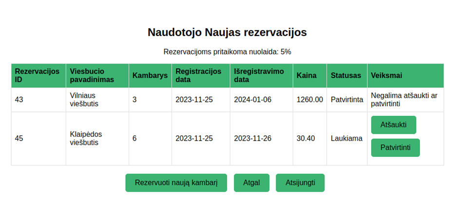
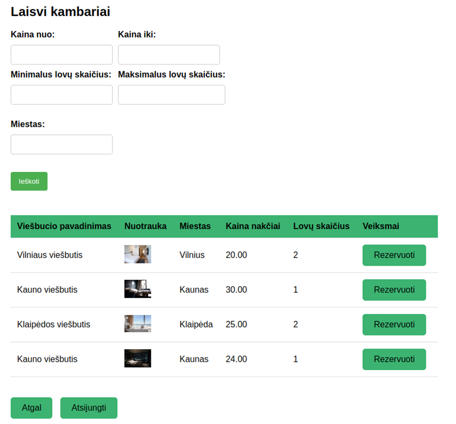
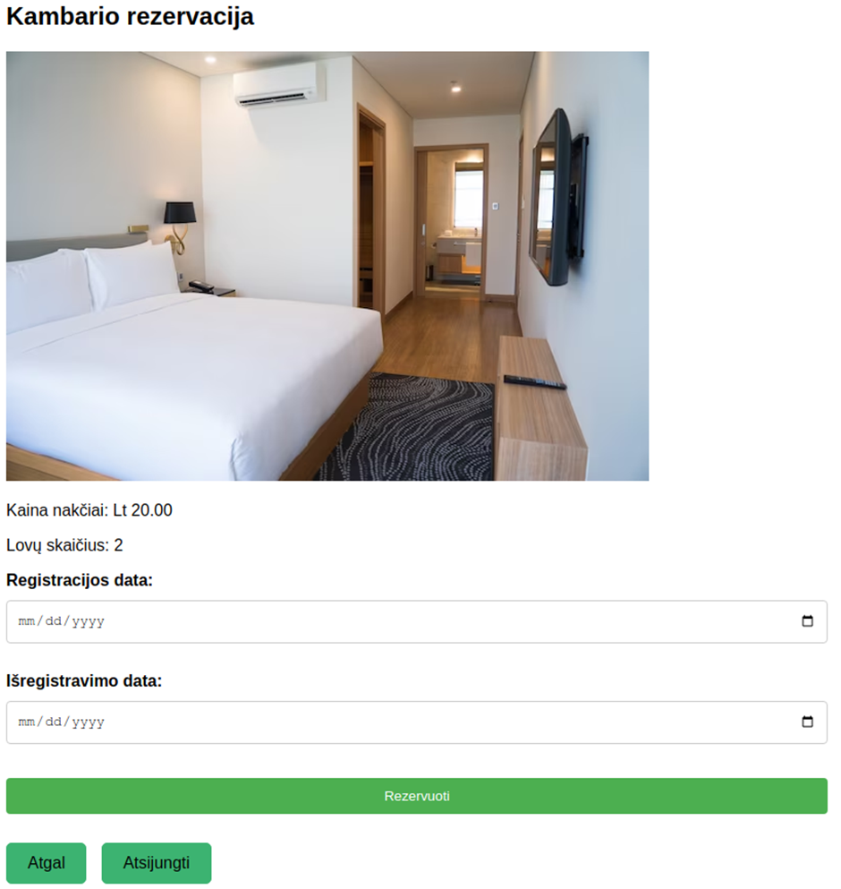
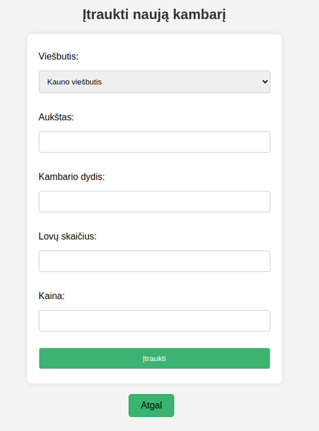

Apie programą
Viešbučių kambarių rezervacijos sistema leidžia valdyti kambarių rezervacijas. Prisijungęs naudotojas gali pridėti naują rezervaciją, atšaukti arba patvirtinti jau sukurtą rezervaciją. Naujoms rezervacijoms pritaikoma nuolaida, jeigu patvirtintų rezervacijų suma viršija tam tikrą ribą.
Sistemos svečias gali tik registruotis prie tinklapio sistemos. Sistema, prisijungusiam vartotojui, leidžia peržiūrėti rezervuotus kambarius, sukurti rezervaciją viename ar keliuose viešbučio kambariuose. Galima rezervuoti kelis kambarius viešbutyje. Rezervacijas galima patvirtinti, patvirtintų rezervacijų kaina leidžia pritaikyti nuolaidas vėlesniems užsakymams. Rezervacijas galima atšaukti. Tikslesnei paieškai galima naudoti paieškos filtrus.
Prisijungus „Viešbučio atstovui“ sistema leidžia atlikti visas „Kliento“ funkcijas, bei užregistruoti naują kambarį ir priskirti šį kambarį jau sistemoje įrašytam viešbučiui. Naujai užregistruotą kambarį sistemos vartotojai gali pasirinkti kuriant naują rezervaciją.
Galiausiai prisijungus „Sistemos administratoriaus“ statusu sistema leidžia naudoti „Kliento“ ir „Viešbučio atstovo“ funkcijomis, bei peržiūrėti ir tvarkyti sistemos naudotojų paskyras naujame lange. Administratorius gali blokuoti, bei trinti paskyras.
Programos veikimas
Kliento naudotojo funkcijos
Prie sistemos prisijungus kliento paskyra galima peržiūrėti sukauptą nuolaidos kiekį ir jau atliktas rezervacijas. Kiekvieną rezervaciją galima atšaukti arba patvirtinti. Šiame lange taip pat galima pridėti ir naują rezervaciją.
Paspaudus mygtuką „Rezervuoti naują kambarį“. Šiame lange matomi sistemoje laisvi kambariai. Puslapio filtrai leidžia atlikti tikslią kambarių paiešką pagal kainą, lovų skaičių ir miesta kuriame galima rezervuoti viešbučio kambarį.
Prie kambario kurį norima rezervuoti matomas mygtukas „Rezervuoti“. Paspaudus šį mygtuką matoma padidinta kambario nuotrauka, paspaudus ant kambario nuotraukos matomos visos kambario nuotraukos. Įvedus įregistravimo ir išregistravimo datas nauja rezervacija įrašoma.
Viešbučio atstovo naudotojo funkcijos
Prisijungęs viešbučio atstovas sistemoje gali pridėti naują viešbučio kambarį, kurį vęliau galėtų rezervuoti sistemos klientas. Pasirinkus jau įrašytą viešbutį ir įrašius kitą informaciją apie kambarį, kambarys išsaugomas duomenų bazėje.
Sistemos administratoriaus naudotojo funkcijos
Sistemos administratorius gali atlikti tokias pat funkcijas kaip ir sistemos klientas, bei viešbučio atstovas. Sistemos adminstratorius taip pat gali valdyti kitų naudotojų paskyras, peržiūrėti paskyrų duomenis (el. paštas, sistemos rolė, paskutinio prisijungimo laikas) arba šias paskyras ištrinti.
Panaudotos technologijos